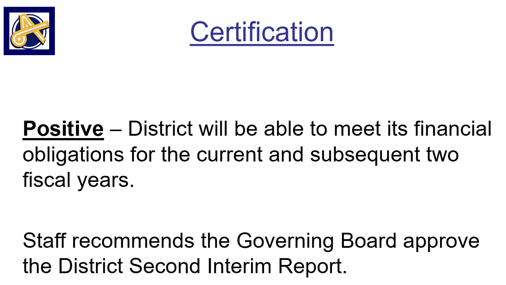
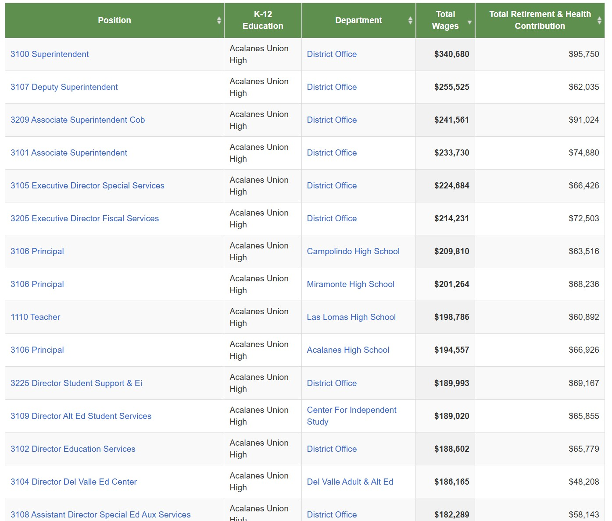

If you live in Lamorinda, in the southwestern areas of Walnut Creek, Walnut Heights, or Canyon, you should be aware of the following reasons to vote NO on Measure T, a new $130 parcel tax with yearly increases of up to 3%.
Reason 1: We already pay a lot of taxes to Acalanes Union HSD
If your home is valued at $1 Million, here is what you now pay:
| Existing Permanent Parcel Taxes | $301 |
| Interest and Principal on Bonds | $288 |
| District Share of 1% Base Tax | $1400 |
| Total | $1989 |
And if you rent, your landlord may be passing these costs through to you.
Reason 2: Acalanes Union HSD doesn’t have a financial emergency and didn’t need to call a special election
Acalanes’ latest state budget update projects a $15.8 million fund balance and says that the district has sufficient resources to get through the 2026-2027 school year, so the Board could have waited until next year’s Primary to go to voters.
Reason 3: Acalanes Union HSD is spending over $1 million to hold this unnecessary special election
With 86,912 registered voters and a cost of $11-$14 per registered voter, this election is going to be very expensive. The District didn’t have to spend that money.
Reason 4: Acalanes Union HSD can save money on administrator salaries
The superintendent has total compensation of $436,000 and a dozen other administrators collecting at least $250,000 in salary and benefits. This for a district with just over 5000 students.
Click on the screenshot below to see more compensation data from the California State Controller's Office
Reason 5: Acalanes Union HSD can save money by curtailing non-educational programs like DEI
Acalanes has an active “Diversity, Equity, Inclusion, and Belonging” program using both staff and student time. So if the District has to make cuts, they don’t have to affect Advanced Placement courses and career preparation.
Reason 6: The County and District were planning to send you deceptive ballot materials
A Superior Court Judge ruled that the District had to rename the ballot measure name and correct the ballot summary, while the County Counsel had to alter his “impartial” analysis. Instead of informing you with neutral information, they wanted to use the ballot materials as an ad, with ballot language molded by expensive consultants and pollsters.